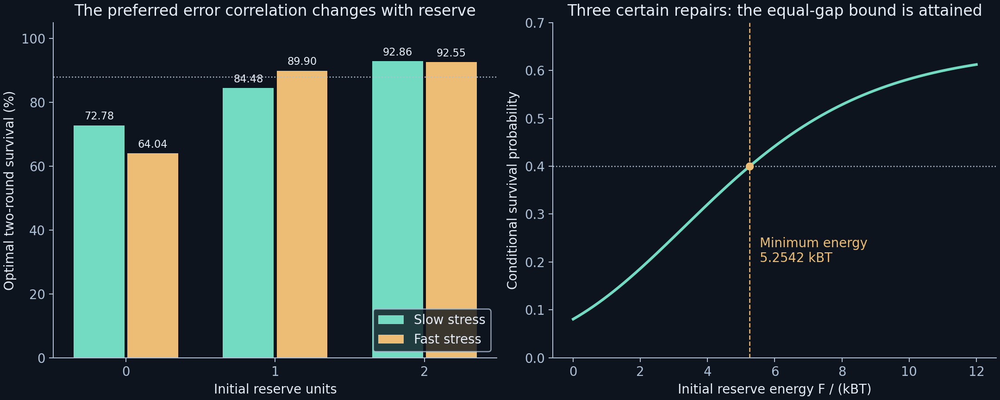
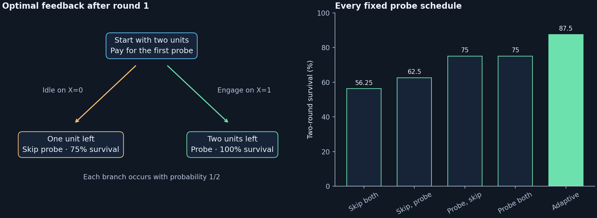
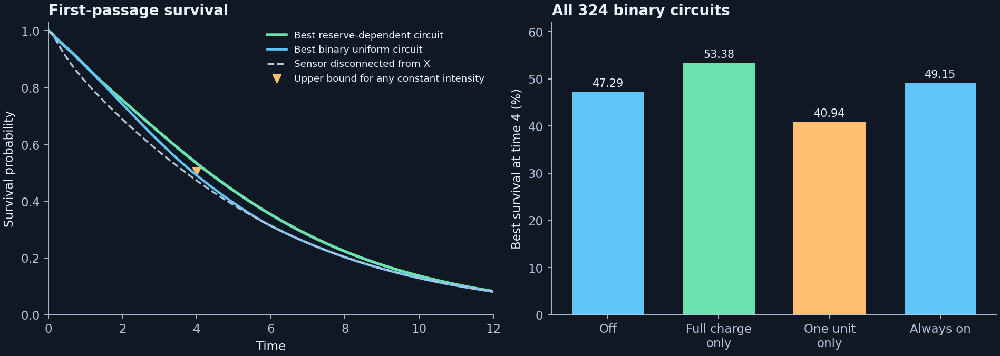
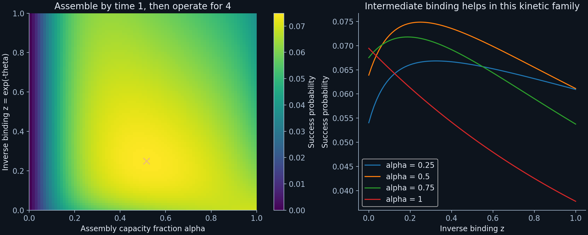
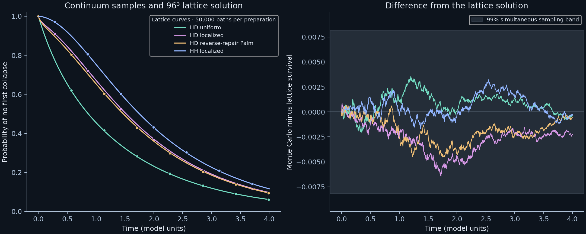

From a prediction about science to auditable survival models
The project began with the closing minutes of Jacob Tsimerman's Golden Gate Institute talk. Around 8:22–8:39, the supplied transcript records his prediction that the current landscape of mathematical problems would be resolved within five years, with several generations of progress compressed into that interval. Around 8:57 he asks researchers to reconsider their scientific ambition. At 9:05–9:28 he invokes the chain from mathematics to physics, chemistry, and biology, suggesting that computational difficulty might cease to enforce familiar disciplinary boundaries. At 9:36–9:56 he extends the challenge to philosophy, including attention, love, and value. These are a research invitation and predictions about the future. The experiments below test a small, explicitly defined part of that invitation. Video from 8:57 · Transcript provenance and closing excerpt
“we have to start revisiting how ambitious we are with our science” — supplied transcript, 8:57–9:05; audio verification pending.
The user reports that these comments inspired a search for projects that could cross those boundaries. The selected direction visible in the initial package is Physical possibilities of purposeful activity, operationalized as a thermal sensor whose errors affect survival. The subsequent research asks how sensing can help a device keep functioning when information, action, and repair all draw on physical resources.
Contents and navigation
- 1. The starting research package
- 2. What the initial package delivered
- 3. Codex's assessment and the change in ambition
- 4. Paying for repair
- 5. Closing the operating-energy loop
- 6. Removing the clock changed the conclusion
- 7. Tools, failures, and repairs
- 8. What this journey demonstrates
- 9. Making the work assessable
- 10. Making the organization itself emerge
- 11. Correcting the novelty claim before extending the model
- 12. Implementing and independently checking spatial maintenance
- Evidence and reproduction receipts
1. The starting research package
The available record begins with a research package titled Physical possibilities of purposeful activity, together with the talk transcript. The first request was “Read the entire codebase in cwd.” This journey starts from those supplied artifacts without attributing their origin or reconstructing earlier project proposals. It then follows the assessment, the user's successive research questions, the resulting constructions, and the final scope of the evidence.
The local transcript contains rough automatic-transcription wording. This account paraphrases its closing argument and supplies timestamps. The video fetch was throttled during preparation of this dossier, so independent audio verification remains open. The transcript's earlier claims about contemporary mathematics are outside the scientific premises used here.
| Evidence | What it establishes |
|---|---|
| User's account of the motivation | The connection between the talk and the project exploration |
| Initial README, model, tests, figures, and paper | What the first study actually contains |
| This Codex conversation | Requests and implementation history of Studies 02–04 |
| Executable source and current test receipt | Current behavior within the implemented model classes |
| Source manifest and literature notes | Earlier claimed retrievals, with a fresh targeted comparison added here |
2. What the initial package delivered
Study 01 contains a four-state thermal sensor, a reduced mismatch chain, exact matrix-exponential survival, a Gillespie simulator, 15 original tests, an offline numerical atlas, and a research note. Two sensors have 80% stationary accuracy and equal mutual information. The faster one uses approximately half the stationary sensing work. Under instantaneous mismatch killing it survives less well, while under four-stage damage with reset it survives better.
| Quantity at horizon 20 | Slow | Fast |
|---|---|---|
| Sensor power in thermal energy per time | 0.176666 | 0.087135 |
| Instantaneous-hazard survival | 0.302646 | 0.153486 |
| Four-stage damage survival | 0.382572 | 0.867882 |

The numerical record includes 30,000 seeded trajectories for each sensor/law combination, 144 transfer cases with 69 ranking reversals, and 1,875 sampled designs at three horizons. These are computational experiments within a declared architecture. The proofs derive a sensing-power frontier and an asymptotic survival ordering. Original proof · Saved results · Verification
3. Codex's assessment and the change in ambition
The initial inspection reproduced the example and passed all 15 tests. It also found stale source hashes for the atlas template and artifact builder in the earlier numerical run manifest. The release manifest matched the files then present. Those two records answer different questions: file integrity and provenance of an earlier computation. Neither automatically dates a scientific discovery.
Codex's assessment was that the package is a serious tractable example, with established ingredients and unestablished priority. It handles temporal error structure and effective failure well. Free damage reset, externally supplied driving, and missing energy feedback limit the interpretation as a persistent physical agent. The proposed next step was a finite resource reserve with paid repair, followed by a single reserve for sensing, action, and maintenance.
This narrowed the original ambition to statements that could be refuted. What energy is necessary to survive? Which controller attains the bound? Does the advantage remain when the physical architecture changes? The user's subsequent requests drove each extension.
4. Paying for repair
The user asked for a minimal thermodynamically consistent model and a sharp survival bound with a matching construction. Study 02 uses an integer reserve. Repair consumes a unit, and the reverse reaction returns that unit while recreating damage. A rate ceiling and a fixed contact time bound the probability of successful repair. Conditioning on the number of stressed checkpoints gives an exact survival frontier. Concavity proves that equal energy allocation is optimal for a known number of repairs.
The resulting theorem bounds every contact schedule in the specified class and gives the attaining schedule. It also shows that reserve size can reverse the preferred error correlation. The construction remains externally phased. Study 02 proof · Executable calculation

5. Closing the operating-energy loop
The next request was to fund sensing, action, and repair from the same reserve, and compare adaptive sensing with the best fixed strategy. Study 03 adds paid measurements, paid engagement, and accessible fuel on correctly chosen engagement. Dynamic programming gives the exact finite-horizon frontier and an attaining controller. Fixed sensing schedules retain optimized actuation and a fallback when a scheduled measurement is unaffordable.
For the symmetric two-unit example, adaptive sensing achieves 7/8 survival in two rounds. The best fixed schedule achieves 3/4. The first probe creates two live reserve states that require opposite decisions in the final round. This makes the benefit of reserve feedback explicit.

Further derivations give an exact accuracy threshold of 2/3 for a strict two-round advantage, a switch in the optimal fixed long-run regime at repair success 2−√2, and distinct exponential survival factors. Removing harvesting eliminates the exponential advantage for a finite reserve. The long-run adaptive construction avoids repair on its surviving paths, which explains why its exponent does not depend on repair success. These distinctions matter when interpreting the theorem. Study 03 full proofs · Numerical record
6. Removing the clock changed the conclusion
Study 04 replaces rounds with autonomous competing reaction channels. The environment, memory, actuator, damage, and reserve evolve continuously. Forward and reverse rates obey local detailed balance. Survival ends on the first entry into terminal damage. Static gates use the available memory and battery level.
All 324 binary circuits are enumerated. Exact rational enclosures identify a unique time-four winner that senses only at full charge. A second-derivative bound extends the uniform-sensing comparison to every constant intensity between zero and one. The adaptive circuit reaches about 53.38%, while every such constant intensity is bounded above by 50.63%.

The long-run binary optimum leaves sensing off. A positive-vector spectral certificate verifies this result. The checkpoint model and the autonomous network change several assumptions at once, including damage dynamics, reverse channels, and control architecture. Their different asymptotic behavior cannot be causally assigned to clock removal alone. Study 04 proof · Exact certificate
7. Tools, failures, and repairs
| Tool or method | Role in this project |
|---|---|
| Python, NumPy, SciPy | Markov generators, matrix exponentials, optimization, probability propagation |
| Fraction and integer arithmetic | Outward enclosures and spectral certificates |
| Matplotlib | Scientific figures generated from reproducible numerical calculations |
| Web research | Closest prior work and precise limits on novelty claims |
| PowerShell and file inspection | Workspace inventory, source checks, test execution |
| KaTeX and HTML | Offline equations and browsable evidence in this dossier |
The subsequent implementation was performed inline in Codex. No research subagents or independent expert reviewers were used. The initial package's internal production workflow is outside this record. Monetary costs and token usage were not recorded.
Several recoverable failures are visible in the conversation. A test attempted to multiply a Python list by a floating-point bound and raised TypeError: can't multiply sequence by non-int of type 'float'. It was corrected to a NumPy array. An exploratory rate search raised ValueError: too many values to unpack (expected 7) and was corrected before producing the retained benchmark. A documentation patch failed because expected lines did not match the current file; the actual file was read and the patch reapplied. A feedback arrow crossed text in a figure; visual inspection led to a smaller arc. The search also produced negative findings, including circuits whose sensing expense degraded survival and the loss of the long-run sensing advantage. Those outcomes shaped the final scientific claims.
An unrelated lecture-note request was explicitly withdrawn by the user as a wrong-project message. A prior request to commit and push was interrupted. The current workspace has no Git repository metadata, so this record does not claim a completed publication or push.
8. What this journey demonstrates
The project makes a mathematical chain assessable: transition rates determine error histories; error histories interact with resource-limited repair; observation and action change reserve distributions; those distributions determine the probability of reaching failure. It tests a narrow route through Tsimerman's proposed disciplinary boundaries.
Studies 01–04 begin with supplied architecture. Study 05 adds abstract chemical self-assembly and cooperative repair. Molecular synthesis, reproduction, evolving architecture, and biological measurements remain open. Terms such as purpose and survival here refer to designer-specified operation and stopping rules. The philosophy portion of the talk supplies motivation, while the mathematical claims concern explicitly defined stochastic systems.
The companion scientific document supplies full derivations, an updated literature comparison, and a source-linked receipt for every study. The accompanying manuscript draft concentrates on the mathematically strongest candidate contributions. Priority and independent proof review remain open. Scientific dossier · Manuscript PDF · Portable LaTeX sources and figures
9. Making the work assessable
The initial documentation pass reran its 30 tests and the full autonomous benchmark, and generated a new paid-repair figure directly from the model. The scientific dossier keeps the original mathematical assumptions visible and introduces the chemical vocabulary needed to interpret them. The literature comparison records which papers were inspected fully and which only at abstract level. The manuscript is a candidate paper draft with human authorship and independent review still pending.
The rendering checks exercise desktop and phone widths, every local link, every displayed equation, and every figure. A Windows newline-conversion problem initially stopped the LaTeX build; normalization fixed it. An absolutely positioned accessibility layer in the equation renderer initially widened the mobile page; anchoring that layer to its equation fixed the overflow while retaining accessible math. These are document-production corrections. They do not change the mathematical model. Scientific execution receipt · Browser and source-integrity checks · PDF build receipt
10. Making the organization itself emerge
The next request asked for a system that assembles and maintains its own organization, with proof and evidence through publication. Study 05 begins with free complementary monomers and a finite inventory of fuel. The functional complex must form through a chemical association reaction. An existing functional complex can then catalyse fuel-consuming repair of a damaged complex. Every enabled channel keeps its reverse, and waste stays in the compartment.
The first checks established conserved inventories and exact detailed balance, including the factorial entropy of molecule counts. A pathwise identity then gave the resource bound N\ge k+r for k assembled complexes and r net repairs. An explicit sequence of assembly followed by damage–repair cycles attains that count for k\ge2. A one-complex reduction supplied a closed-form success probability and the exact maximizing static assembly rate.
An early objective counted devices that had assembled and remained functional at a common final time. Numerical exploration showed that this could reward delaying formation. The retained benchmark requires formation by a deadline followed by a full specified operating lifetime. The two event probabilities are defined and derived separately in the scientific study.
The first exploratory optimizer also exposed an implementation issue: converting arbitrary floating-point parameter proposals into exact fractions produced integer denominators too large for the certificate representation. Floating exploration now evaluates the full generator directly, while certification uses explicitly rational points. The corresponding implementation paths are cross-checked in the tests.
The two-complex example has four fuel molecules. Numerical exploration located an intermediate-binding candidate. Rational probability enclosures and derivative bounds then covered the full real parameter square, giving an optimum between 0.07486803 and 0.07496801. Every boundary design is bounded above by 0.07296462. This proves an interior optimum in this kinetic family. A separate single-complex theorem shows that stronger binding is always beneficial there, which identifies the importance of the additional cooperative organization.

An independent six-channel Gillespie implementation ran 30,000 seeded attempts. Its success estimate of 0.0743 agrees with the exact value for its chosen rational design. It retained successful paths with fuel-consuming repair and verified the molecule and energy ledgers at every jump. A separate replay checks every saved rational point, rectangle partition, and interpolation inequality against the source equations and independent matrix exponentials.
The literature search found extensive earlier work on intermediate binding strength, finite-particle assembly times, fuel-driven persistence, and chemical self-replication. The study therefore presents a candidate model-specific benchmark with exact accounting and a certified continuum optimum. Its relevance to the chemistry-to-biology question is the formation of functional components that enable subsequent maintenance. Molecular implementation, replication, and hereditary variation remain open.
The current publication package includes this development history, the complete Study 05 proofs, five new figure sets, an expanded manuscript, the reaction-network code, a certificate tree, its replay receipt, and the stochastic evidence. Read Study 05 · Literature comparison · Certificate replay
11. Correcting the novelty claim before extending the model
After Study 05, the user challenged whether the project had established any new concepts. The assessment was narrowed: intermediate binding optima, chemical persistence and fuel-supported maintenance have extensive precedents. A model-specific certificate and different numerical values do not establish a new general idea. The project adopted a claim-by-claim originality audit: state the proposed claim, inspect neighboring literature, compare actual equations and theorems, and try to derive away the claimed novelty before promoting it.
The user then proposed stochastic calculus. The concrete opportunity was to resolve molecular positions and encounter delays while retaining chemical jumps and finite fuel. A preliminary reflecting-sphere calculation showed why a long mean encounter time alone is inadequate evidence for a spatial correction. Its exact capture probability, 32.9294%, was almost the same as the matched-mean exponential prediction, 32.9276%. A localized launch instead gave 88.6561%. These were classical benchmark calculations with assumed target geometry, not a biological calibration. Historical plan and calculation
12. Implementing and independently checking spatial maintenance
The user authorized a two-complex pilot, required the originality audit first, and requested parallel implementation and verification with durable receipts. The audit supported a targeted numerical extension without a novelty claim. Separate work covered the primary-literature audit, the model and solver, and independent reference calculations and Brownian paths. Integration retained the exact model boundary: two preassembled complexes, periodic relative position, reversible contact-gated repair, finite fuel/waste and fast-mixed small fuel molecules.
The thermodynamic gate required the same spatial activity in both directions of every repair pair. Full equilibrium was distinguished from survival killed at the first all-damaged state. The comparator was strengthened from one reference-rate calibration to a separate uniform-start forward mean for every fuel edge, with its reverse coefficient paired to preserve equilibrium. Both comparators are shown; neither was fitted to survival.
The implementation exploits exact signed-permutation symmetry of each periodic lattice, then compares four spatial refinements. An independent continuous-space path method uses exact Gaussian Brownian increments at dominating Poisson candidates, avoiding a Brownian timestep approximation. Tests separately assemble a labelled grid generator, a dense exponential, a spherical Doi benchmark, limiting cases and event ledgers.

From an HD/full-fuel launch, localized preparation gives a maximum sampled gap of 23.208 percentage points from the edge-calibrated count chain, compared with 1.340 points for uniform preparation. The two calibration choices give nearly the same localized discrepancy in this case. An exact second-derivative calculation explains why one count model that ignores preparation cannot reproduce both launches. These findings concern the selected model and parameter choice; they do not establish an unexplored general principle.

The final record contains 51 passing tests, four grids, 200,000 formal continuous-space paths and 200,000 additional fresh-seed paths. Numerical truncation bounds, observed spatial convergence and statistical confidence are explicitly separated. For localized HD, a 99% simultaneous lower bound on the maximum gap from the fixed calibrated comparator is 22.24 points. No rigorous continuum discretization enclosure is claimed. All 104 equations in the standalone report rendered on desktop and mobile; the publication rebuild records its own current browser checks.
The outcome gives a precise qualification to the original Tsimerman-inspired ambition: stronger mathematical tools reveal when a reduction discards operationally important information. They do not automatically supply a novel scientific concept, an enzyme mechanism or a bridge to biological life. The existing paper remains a Studies 01–05 draft; the spatial maintenance report is published separately.
Complete spatial report · Originality audit · Formal verification · Fresh-seed review · Source and artifact integrity
Evidence and reproduction receipts
The dossier build reran the existing test suite. The machine-readable receipt records the full output, UTC execution time, and SHA-256 hashes of source, tests, and mathematical notes. Passing tests supports implementation agreement within the tested cases. The proofs and certificates carry the mathematical claims. Fresh verification receipt
| Study | Executable source | Reproduction | Numerical evidence |
|---|---|---|---|
| 01 | model.py | run_study.py | summary, all 144 cases |
| 02 | reserve.py | run_reserve_study.py | independent full-state test |
| 03 | closed_loop.py | run_closed_loop.py | arrays and example |
| 04 | autonomous.py | run_autonomous.py | integer and rational enclosures |
| 05 | assembly.py | run_assembly.py | certificate, full replay, simulation |
The earlier run-manifest contains historical hashes and package versions for Study 01. Two hashes were already stale on first inspection. The present receipt identifies the exact sources used for this dossier's fresh test run. The 51 tests are a local reproducibility check. Independent scientific review remains pending.